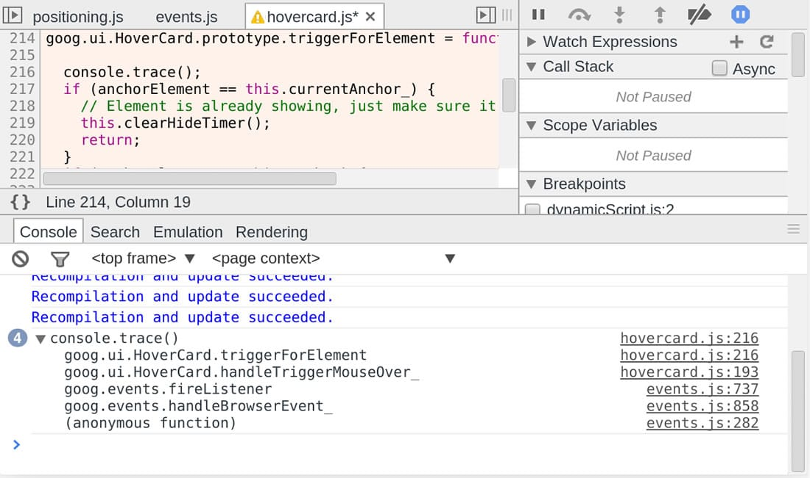

Асинхронный console()
Нет спецификации или требований, описывающих работу console.* методов — они не являются официальной частью JavaScript. Вместо этого они добавлены в JS с помощью среды исполнения. Таким образом, различные браузеры и среды работают с console.* так, как им заблагорассудится, что приводит к запутанным ситуациям. В частности, есть некоторые браузеры и некоторые условия при которых console.log() выведет не то, что ему передали. Основная причина, по которой это может произойти, заключается в том, что операции I/O медленные и блокируют выполнение некоторых программ (не только в JS). Таким образом лучше (с точки зрения UI), чтобы консольные методы работали асинхронно в фоновом режиме.
Обычно мы предполагаем, что console.log() выведет, что-то типа {index: 1}, так что в следующей строке, где происходит a.index++, меняется что-то другое, отличное от результата вывода a.
В большинстве случаев код выше выполнится в девтулзах, как и предполагается. Но что если выполнить этот же код в ситуации, когда браузеру нужно отложить консольный I/O? В таком случае возможно, что когда объект попадет в консоль, a.index++ уже выполнится, и мы увидим результат {index: 2}.